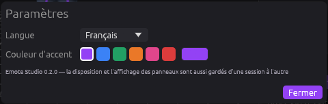

Éditeur d'emotes pour GTA V et FiveM
D'une vidéo à une emote FiveM, sans quitter le studio
Filme un geste ou importe une vidéo, retouche la pose sur le vrai squelette du ped, puis exporte une ressource prête à streamer, animation compilée comprise.

Trois étapes, un seul outil
-
01
Capturer
Importe une vidéo (mp4, mov, mkv…) ou enregistre-toi à la webcam. La détection du corps et des doigts tourne en local, sur ta carte graphique, et le mouvement est transposé sur le squelette GTA V.
-
02
Retoucher
Corrige la pose dans le viewport 3D : anneaux de rotation, déplacement par IK de la main, du pied ou du bassin, timeline image par image, copier-coller de pose en miroir.
-
03
Exporter
Un clic produit une ressource FiveM complète : manifeste, animation compilée en
.ycdet placement des props, avec les entrées pour mc_emotes, dpemotes, rpemotes et scully_emotemenu.

Le vrai squelette, pas une approximation
Au premier lancement, le studio lit dans ton installation de GTA V le squelette et le corps des peds freemode, homme et femme. Lecture seule : rien n'est modifié dans le jeu.
- IK deux os pour les bras et les jambes, bassin qui descend pieds plantés
- La clavicule suit le bras levé : l'épaule garde sa forme, en jeu aussi
- Aperçu skinné en quaternions duaux, sans épaule écrasée
- Bascule homme / femme : les clés suivent les noms d'os

Une timeline qui se lit d'un coup d'œil
Une ligne par os animé, une ligne pour toutes les clés. Clic pour se placer, clic droit pour supprimer une clé, Ctrl + molette pour zoomer.
- Interpolation linéaire, Bézier ou en palier
- Boucle propre : la dernière image rejoint la première à l'export
- Annuler et rétablir sur chaque geste, sauvegarde automatique chaque minute
Une ressource prête à streamer
Le studio écrit la ressource, compile l'animation avec CodeWalker et prépare l'entrée à coller dans ton menu d'emotes. Jusqu'à deux props (Prop et SecondProp), placés à la souris dans le viewport et repris tels quels dans le placement de l'emote.
- Props GTA par nom de modèle, ou depuis un
.ydr/.ydd - Options d'emote : boucle, haut du corps en mouvement, figée sur la dernière image
- Projet
.emotelisible, pour reprendre le travail plus tard
mcs_emotes/
├── fxmanifest.lua
├── stream/
│ └── mcs@salut.ycd animation
└── emotes_snippets.txt entrées de menu# une seule commande pour brancher Claude
claude mcp add emote-studio -- EmoteStudio.exe mcp
# puis, en langage naturel
« Lève le bras droit pour un salut,
boucle sur 2 secondes, exporte-le »Pilotable par une IA, en direct
EmoteStudio.exe mcp est un serveur MCP : une IA comme Claude pose des clés, déplace les membres, ajoute des props, prend un rendu pour vérifier son travail et exporte la ressource.
- Chaque modification apparaît dans la fenêtre et s'annule avec Ctrl+Z
- Le studio est lancé automatiquement s'il est fermé
- Pont local uniquement, protégé par un jeton

Ton espace, tel que tu l'as laissé
Panneaux déplaçables, regroupables en onglets ou masqués, retrouvés à chaque lancement. Interface en français ou en anglais, couleur d'accent au choix.
Télécharger Emote Studio
Un dossier autonome d'environ 215 Mo : décompresse-le et lance EmoteStudio.exe. Ni .NET ni runtime Visual C++ à installer.
- Version
- 0.2.0
- Système
- Windows 10 ou 11, 64 bits
- Requis
- GTA V installé, pour le squelette et le corps des peds
- Langues
- Français, anglais